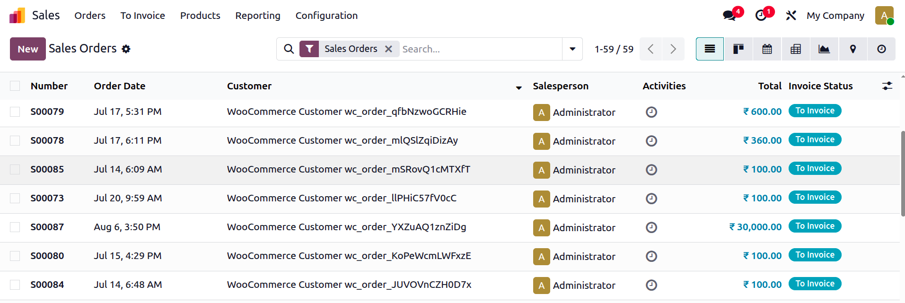
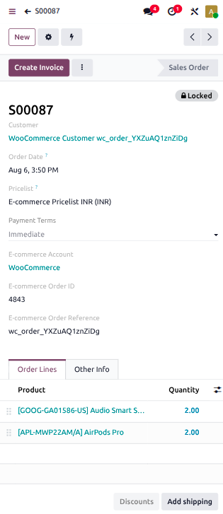
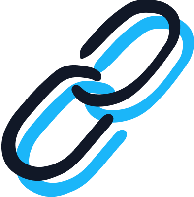

WooCommerce Connector for Odoo 19
Run your WooCommerce store, inventory, accounting, and deliveries all in one place


Unify your WooCommerce store and Odoo 19 with a robust, high-performance integration built on the official WooCommerce REST API, enabling reliable synchronization of products, orders, customers, and inventory. The only WooCommerce connector on the Odoo Apps Store that is directly built and supported by Odoo.
Built for businesses that want WooCommerce to work natively with Odoo, without fragile custom integrations or upgrade risks, while leveraging Odoo's inventory, warehouse, accounting, and sales applications.
Leverage Odoo apps to fit your business
Inventory Management
See every component and product flowing across your end-to-end inventory operation.
Clean books and accurate accounting
Experience effortless financial accuracy with intelligent payment journal splitting and seamless, automated tax synchronization between WooCommerce and Odoo.

Smarter Order Fulfillment
Manage deliveries directly in Odoo while keeping inventory synchronized with WooCommerce.

Scale with Multi-Company
Run multiple WooCommerce stores from one platform with automatic currency conversion and regional inventory tracking.
Choose your level of support
Purchase the app and self-manage the repository
1-hour free meeting with an expert, to get:
- A tailored demonstration
- Recommendations based on your needs
- Answers to your questions about Odoo
- Information about pricing & methodology
Purchase the app and pay for repository maintenance
- Receive customer support with Odoo experts
Try it out
Explore the connector through the "Live Preview" environment. You can browse the complete configuration screens, synchronization operations, product mapping, inventory controls, and order management using the credentials below:
- Username:
user - Password:
user
*This demo database is intended for evaluation purposes only and may be reset periodically.
How it works

Purchase
Complete your purchase from the Odoo Apps Store.
Import WooCommerce products to Odoo
Create your product catalog in Odoo first (with correct categories and taxes), then fetch from WooCommerce for SKU matching.

Connect accounts
Follow the setup instructions and complete your first sync steps.
Synchronization at a Glance
What synchronizes between WooCommerce and Odoo, in which direction, and how often.
| Data | Direction | Trigger | Frequency |
|---|---|---|---|
| Orders | WooCommerce → Odoo | Automatic or manual | Every 10 min |
| Products | WooCommerce → Odoo | Manual (Fetch Products) | On demand only |
| Inventory (Odoo → WooCommerce) | Odoo → WooCommerce | Automatic after order pull | After each order sync |
| Inventory (WooCommerce → Odoo) | WooCommerce → Odoo | Manual (Fetch Inventory) | On demand only |
| Invoices & Payments | Odoo (auto-created) | Automatic on paid order import | Each order sync |
| Customers | WooCommerce → Odoo | Automatic during order import | Each order sync |
Feature Details
Each section explains what the connector supports and its current limitations. Click any section to expand.
Connection & Authentication
The connector communicates with WooCommerce using the official WooCommerce REST API.
✓ What it does
- Authentication — Connects using the OAuth or Consumer Key and Secret generated within WooCommerce.
- Permission validation — Validates API permissions before allowing synchronization.
- Secure account management — All communication occurs through authenticated API requests over HTTPS.
✕ What it doesn't do
- Webhook synchronization — Real-time synchronization is not supported. All operations run through scheduled actions or manual operations.
- Modify configuration while connected — Account settings such as warehouse, journals, taxes, and inventory configuration can only be changed after disconnecting the account.
Multi-Store & Multi-Company
✓ What it does
- WooCommerce Multistore support — Connect multiple WooCommerce stores independently within Odoo.
- Independent account configuration — Every connected store maintains its own synchronization settings, warehouse, journals, taxes, and mappings.
- Multi-company support — Multiple companies can independently manage their own connected stores.
- Independent synchronization history — Each account maintains separate synchronization timestamps.
- Store isolation — Orders, products, inventory, and customers remain isolated to their respective account.
Product Synchronization
Products flow one-way only: WooCommerce → Odoo. Product data is never pushed from Odoo to WooCommerce.
✓ What it does
- SKU matching — Products are matched using the WooCommerce SKU and the Odoo Internal Reference.
- Auto-create products — Automatically creates new Odoo products when SKU matching fails and Create Products is enabled.
- Incremental synchronization — Fetches only newly created or modified products after the previous sync.
✕ What it doesn't do
- Push products to WooCommerce — Products cannot be created or updated in WooCommerce from Odoo. Product management must happen in WooCommerce.
- Map metafields — WooCommerce metafields are not mapped to Odoo fields.
- Import variants as variants — WooCommerce variants are not imported as Odoo variant lines. Each variant is created as a separate standalone product with its own SKU.
- Push categories or tax configuration — Product categories and tax configurations cannot be pushed from Odoo to WooCommerce. These must be set manually in Odoo, ideally before fetching.
Order Management
✓ What it does
- Order import (automatic) — Imports WooCommerce orders into Odoo on a scheduled basis as confirmed Sales Orders.
- Date-range order fetch — Manually fetch orders from a specific date range on demand.
- Recover failed orders — Recover individual orders using the Recover Order action.
- Customer matching — Matches WooCommerce customers to Odoo by email and billing name. Creates a new contact if no match is found.
- Currency detection — Automatically reads and applies the currency from each WooCommerce order.
- Order cancellation — Automatically cancels the Odoo sales order when the WooCommerce order is canceled. If delivery has already been created, a log note is added for manual review.
- Shipping line display — Shipping costs appear as a separate order line, with the customer's chosen carrier (FedEx, Shiprocket, Sendcloud, etc.) shown in the line description.
- Product auto-creation — If a product does not exist in Odoo, it is automatically created during order synchronization. Inventory is not synchronized at that time; it is synchronized only during the product synchronization process.
✕ What it doesn't do
- Apply regional pricelists — Odoo pricelists (per region or customer group) are not applied during order import. Pricing reflects the WooCommerce order value as received.
Inventory Synchronization
Odoo → WooCommerce (automatic): After each order synchronization, Odoo automatically updates the available inventory of mapped products in WooCommerce.
WooCommerce → Odoo (manual only): Click Fetch Inventory. Current stock quantities for synchronized products are retrieved into Odoo.
✓ What it does
- Inventory push (automatic) — Pushes stock from Odoo to WooCommerce automatically after each order sync.
- Inventory pull (manual) — Fetches current stock from WooCommerce into Odoo on demand via the Fetch Inventory button.
- Product-level inventory synchronization — Synchronizes inventory for mapped WooCommerce products.
- Granular synchronization controls — Inventory synchronization can be enabled or disabled per account and per product (offer).
✕ What it doesn't do
- Pull inventory automatically — Pulling stock from WooCommerce into Odoo is not automatic. It must be triggered manually. However, when a WooCommerce order is synced, the quantity is automatically deducted from the mapped location inventory.
- Sync products with disabled inventory tracking — Products with inventory tracking disabled in WooCommerce are skipped during synchronization.
Fulfillment & Shipping
WooCommerce does not provide a native fulfillment API like some other e-commerce platforms. Deliveries are managed within Odoo using its standard warehouse workflow.
✓ What it does
- Delivery creation — Creates delivery orders in Odoo for imported WooCommerce sales orders.
- Warehouse workflow — Deliveries follow Odoo's standard picking, packing, and shipping process.
- Warehouse mapping — Deliveries follow the warehouse configured for the WooCommerce account.
- Inventory updates — When a WooCommerce order is synchronized, the ordered quantity is automatically deducted from the inventory of the default warehouse location.
✕ What it doesn't do
- Shipment synchronization — Validated deliveries are not automatically synchronized back to WooCommerce.
- Shipment status updates — Delivery status changes in Odoo are not reflected in WooCommerce.
- Split shipment synchronization — Partial or multiple deliveries are not synchronized back to WooCommerce.
Accounting, Invoicing & Payments
When "Create Invoice" is enabled, Odoo automatically creates and posts an invoice and registers payment for every order marked as fully paid in WooCommerce. Sales and payment journals can be configured per account.
✓ What it does
- Auto-invoicing — Creates and posts an invoice in Odoo when a WooCommerce order is marked as paid. If a product's invoicing policy is set to Delivered quantities in Odoo, the invoice is created only after delivery.
- Auto payment creation — For prepaid orders, a payment is automatically created when the WooCommerce order reaches the Processing or Completed status. For Cash on Delivery (COD) orders, the payment is created only after the order reaches the Completed status.
- Payment provider mapping — Maps WooCommerce payment providers (Stripe, PayPal, Razorpay, COD, Bank Transfer, etc.) to specific Odoo payment journals.
- Tax matching — Matches WooCommerce taxes to Odoo. Creates a new tax in Odoo if no match is found and "Create Taxes" is enabled.
- Rounding handling — Minor rounding differences between WooCommerce and Odoo totals are handled by adding a small adjustment line automatically.
✕ What it doesn't do
- Auto-invoice with rounding adjustments — Orders with a rounding adjustment line will not auto-generate an invoice, even if paid. These must be invoiced manually.
- Apply inactive taxes — Inactive taxes in Odoo cannot be applied to imported orders. Orders matching an inactive tax will fail and log an error.
- Auto-invoice when "Create Invoice" is disabled — If the setting is off, invoices and payments must be created and registered manually.
Monitoring & Troubleshooting
✓ What it does
- Email alerts — Sends notifications to the assigned Salesperson or Administrator when an order import or inventory synchronization fails.
- Order recovery — Manually re-fetch a specific failed order using its WooCommerce Order Reference via the Recover Order action in the Cogs menu.
- API logs — Detailed API logs are available via the Logs smart button on the account (visible in Debug Mode — enable with Ctrl+K and type "debug").
- Scheduled activities — Activities are scheduled on records when manual intervention is needed (e.g., address mapping failure, adjustment line).
Functional Q&A
Quick answers to the most common functional questions about the WooCommerce Connector.
1 "Does the connector support WooCommerce Multistore?" YES
2 "Can Odoo create or update products in WooCommerce?" NO
3 "Does inventory sync automatically in both directions?" PARTIAL
4 "Can inventory synchronization be disabled for individual products?" YES
5 "Does the connector synchronize shipments and tracking numbers?" NO
6 "Can paid orders automatically create invoices?" YES
7 "Does the connector support real-time synchronization?" NO
8 "Can I recover a failed order?" YES
9 "Can I synchronize orders from a specific period?" YES
10 "Will I receive notifications if synchronization fails?" YES
11 "Does it handle returns and refunds from WooCommerce?" PARTIAL
12 "Does it support different pricelists per region or customer group?" NO
13 "Does the connector support multiple inventory locations?" NO
Suggested Products


Getting Started
A complete step-by-step setup guide is available, covering configuration, Custom App credentials, warehouse and journal mapping, and running your first sync.
Setup Guide
Full configuration walkthrough including setup, Custom App credentials, warehouse mapping, journal configuration, and first sync steps.
Open Setup Guide →Custom Requirements
Need functionality beyond what's listed here? Custom development is available through Odoo's on-demand developer program.
Developers on Demand →Need help?
For onboarding, configuration, or support assistance, please schedule an appointment using the appropriate link below. Our team will guide you through the setup and help with any technical clarification.
Book an Appointment →